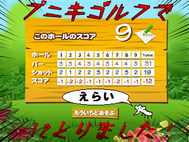
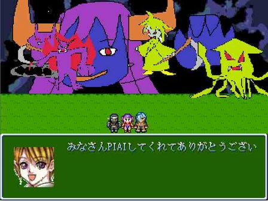
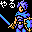
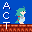
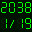

総得票から選出した【総合評価】と平均票を競った8つの【部門評価】において、
上位に選ばれた3作品を表彰させていただきました！
また、全作品の得票・コメントまとめをtxt形式でご確認いただけます。
紅組 / 白組
紅組 提出作品：38/46 総得票：22421pt
白組 提出作品：37/45 総得票：18283pt
ということで、紅白2015は 紅組の勝利 となりました！
【部門評価】
全てが優れているわけではなくとも、光る部分が確かにあると評価された作品を表彰します。
20件以上の回答が寄せられた作品を対象とし、平均値で選出しています。
事前の告知なく集計方法を変更し、混乱を招いてしまったことをこの場にてお詫び申し上げます。
| 【熱中部門】 | |||
| 第１位 |  |
No.37 もしもンクエストモンスターズ2～ポテチのふしぎな鍵～ | 平均4.79pt 回答33件 |
| ［主なコメント］ 完全にDQモンスターズクローンゲーで配合が楽しい、カジノも充実しててやめられなくなる。 時間を忘れて没頭してしまいました!完成版に期待させて頂く (-/-/19～25歳) | |||
| 第２位 |  |
No.31 メイジの転生録 | 平均4.70pt 回答86件 |
| ［主なコメント］ 最初はなんだこのふざけたゲームだと思いつつも進めていたらどんどん惹きこまれて気づいたら一日でクリアしていた。 不思議な魅力のある作品だと思う。 (-/26～30歳/男性) | |||
| 第３位 |  |
No.18 スパークⅡの不幸な一日 | 平均4.56pt 回答43件 |
| ［主なコメント］ 非常にシコリティの高い作品でした。 (名無しのお漏らしファン/19～25歳/男性) | |||
| 【技術部門】 | |||
| 第１位 |  |
No.76 KB2 | 平均4.87pt 回答39件 |
| ［主なコメント］ 仕様をうまく利用して進めた時の達成感が最高 (-/26～30歳/男性) 最初から最後まで一気にプレイしてしまった。 抜群の操作性や、バグによる破綻の少なさ(少なくとも自分は一度も遭わなかった)より見える内部処理の技術力の高さは言うまでもなく。 繊細な操作と柔らかい思考の両方が必要で、一部の面には大いに悩まされた。 リトライがノーリスクで、トライアンドエラーがやり易いのも評価点だと思う。 全体的な難易度曲線、前半は五面ごとにギミックを統一するという構成も素晴らしく思える。 完全な主観であるが、クリアに必須な細かい仕様についても 最初の説明で全て把握しきれなかったとしても自然に気付けるように仕組まれていたようにも感じた。 最後の定番なオチ含め、どの面から見ても文句のつけようがない出来だった。ぽよ! (-/不老不死/性別不明) | |||
| [作者コメント] ( ﾟ∀ﾟ ) みんな、ありがとう！！！ ＿(__つ/￣￣￣/＿ ＼/ / ￣￣￣ | |||
| 第２位 |  |
No.09 絶対パコれる漢字トレーニング | 平均4.70pt 回答20件 |
| ［主なコメント］ 日頃漢字力を持て余してるあなた、カキコロシアムの選手になって女の子とパコって見ませんか? 初見でちびるくらいの漢字の組み合わせがあるので、小学生の学習用にも最適です。 (-/19～25歳/男性) | |||
| 第３位 | |
No.37 もしもンクエストモンスターズ2～ポテチのふしぎな鍵～ | 平均4.67pt 回答33件 |
| ［主なコメント］ 前作プレイ済み。まだ前半。 出会うモンスター全てが仲間にできるってのを再現しちゃうのすごい。 要望として、後半になると操作回りのテンポが辛くなりそうなので、速さの調節できればうれしいです。 | |||
| 【物語部門】 | |||
| 第１位 | |
No.18 スパークⅡの不幸な一日 | 平均4.77pt 回答43件 |
| ［主なコメント］ これで描写が薄いとか物足りないとかいう作者さんのHENTAIっぷりに脱帽しました。 いいぞもっとやってくれ! (-/26～30歳/男性) | |||
| [作者コメント] 多くの人達の力を借りなければ、この作品が完成に至ることはなかったでしょう。 リスペクト元小説の方々、素材やツールを開発した方々、作品に協力してくれた方々、作品を遊んでくれた方々、投票してくれた方々。 全ての人に感謝の意を捧げます。本当に、ありがとうございます。 さて、皆さんは2Lペットボトルを見たことはあるかと思いますが、このペットボトル、相当な大きさがありますよね。 家に置いておくのは結構ですが、持ち運ぶとなると一苦労。結局出先では然程嵩張らない500mlのペットボトルを持って行くのがベターとなります。 しかし僕は「外ではペットボトルを持って行くのが良いか」という至極どうでも良い話をしたいのではありません。 ――――華麗な美少女のお腹の中に、2Lペットボトルと同じ量のおしっこが溜め込まれているとしたら―――― 様々な理由によりトイレに行けず、なまじ女の子の”我慢”の能力が強かったが為に解放を許されずに居る大量のおしっこ。 それは結局はただの液状の老廃物でしかありませんが、我々生物の持つ社会的機能/思考により"恥ずかしいもの"という意味を付加させます。 ”恥ずかしいもの”、つまり下品、異常なもの。それらを隠していくことで、正常であり、立派なものと見做されます。 当然”恥ずかしいもの”を皆の前で露呈させるわけにはいきません。出しても良い場所に移動するまで、必死に必死に我慢します。 しかし彼女の膀胱の中に入っている2Lの量のおしっこは相当な物です。本来一般女性の限界容量は平均500mlと言われており、1L以上我慢出来る人は稀有であると言われているほど。 (因みに、実際に2L以上の量を我慢した例は存在しており、この量は非現実的な数字ではないということを明記しておきます) 本作では着ている服装の関係から下腹部の膨らみは見られないだろう、と言う事で描写を省きましたが、彼女の下腹部は大量のおしっこでみっともなく膨れ上がって居ます。 見てて痛々しくなる程にパンパンに張った彼女のお腹。そこまでお腹を膨らませた原因はおしっこであり、実に下品で”恥ずかしいもの”そのものであると考えられます。 しかし同時に、そこまでしておしっこを必死に我慢する行為には「彼女が”正常”で”立派”なものであろうとする」ことへの拘りが感じられます。 ”下品な身体”と”立派な思考”。おしっこが詰まった彼女のお腹は、そんな二つの側面を兼ね備えているのです。 勿論そこまで我慢をしていて平気な筈がありません。恥ずかしい部位に意識を集中させ、身体を捻らせ我慢をしなければその場でお漏らしをしてしまうことになります。 必死に足をクネらせ、手は恥ずかしい部位をグッと押さえ、腰は引け、お尻はもじもじと捩り、顔は真っ赤になり、目は涙で滲み、頬は汗が伝う。 その姿は、この手のフェチシズムを持たない人でも扇情的に映るでしょう。そしてそこまでの醜態を晒しても尚、出口からじわじわと染み出る熱水。 駄目だ、漏れちゃう、もう我慢が出来ない。彼女の思考はおしっこに関することで埋まります。 暴力的な尿意による痛み、公共の場で醜態を晒さなければならない辱め。しかし真に辛いのは、それほどの苦痛を味わいながらもまだ我慢をしなければならないという状況にあります。 おしっこを本当に漏らしてしまえば全てが終わる。その恐怖から逃れる為に、彼女は必死に尿意を我慢するのです。そう、お腹をみっともなくおしっこで膨らませながら。 僕はそんな彼女に「じっと立ってろ」と命令したいのです。おしっこを我慢している彼女には無理な話ではありますが、無理矢理じっとさせます。 そして服を捲り、パンパンに膨らんだ下腹部をじっくり観察したあと、その神秘的なお腹をギュッと押したいのです。 その固い感触、触って改めて感じさせられる途方も無い量のおしっこ。そしてその瞬間に喘ぐ彼女の声、同時に響くド派手な水音。 滝の様に溢れ出る下品な熱水は下着を突き抜け、あっという間に巨大な水溜りを作ってしまいます。 その水溜りは僕の方まで伸びており、彼女と僕の足元はおしっこでビショビショ。我慢に我慢を重ねたおしっこの匂いが、より”お漏らしをした”という事実が事実であることを強調します。 一通りおしっこを出し切ったあと、泣き喚く彼女。僕はその場を離れます。最早この場において、僕は不純物だからです。頬を伝った彼女の涙が、水溜りの中でぽちゃんと鳴り響くのです。 | |||
| 第２位 |  |
No.53 百合っぽい恋 | 平均4.68pt 回答65件 |
| ［主なコメント］ あえて多く語る事も無い。 ただ、「良い……」と言葉が漏れるだけ。そういう語れない良さ。 (細目魔王/19～25歳/男性) | |||
| 第３位 | No.08 エンディングノート | 平均4.51pt 回答49件 | |
| ［主なコメント］ これぞ群像劇!という作品。 群像劇が好きならプレイして損はない。 (-/19～25歳/男性) 作者の言うとおり二回見て内容を整理することで印象が全く違う作品だった。 フードファイト編はあれでよかったのだ・・。 よかったけど刃牙道要素ぜったいゆるさねぇ!!w (D/26～30歳/男性) | |||
| [作者コメント]  | |||
| 【演出部門】 | |||
| 第１位 | |
No.53 百合っぽい恋 | 平均4.85pt 回答65件 |
| ［主なコメント］ 相変わらずの甘さと暖かさ。ところどころにネタを仕込むのも忘れないのが流石と言うべきか あらゆる点で丁寧に作られており、安心して楽しめます。いつか続きが見たいな (業務用ラム/26～30歳/男性) | |||
| 第２位 | |
No.31 メイジの転生録 | 平均4.82pt 回答87件 |
| ［主なコメント］ † † 運 命 祝 福 せ よ † † † † 運 命 祝 福 せ よ † † デフォ戦ながら画面全体を覆う戦闘アニメを使った派手な演出、計算しつくされたバランス、独特の言語センス、 そして過去作を遊んでいればクスリときたり燃えたりする要素が運命的に交錯し非常に清々しい後味が残りました。 (-/26～30歳/性別不明) | |||
| 第３位 | |
No.18 スパークⅡの不幸な一日 | 平均4.77pt 回答44件 |
| ［主なコメント］ おしっこをガマンする それだけの話が実に丁寧に演出されている 後編の一枚絵も美麗 ギリギリの投稿のためかエピローグはざっくり | |||
| 【斬新さ部門】 | |||
| 第１位 | |
No.09 絶対パコれる漢字トレーニング | 平均4.43pt 回答21件 |
| ［主なコメント］ NDS初期タイトルにありそうな思考&知育の戦闘システム | |||
| [作者コメント] ＰＩＡＩありがとうございました。 | |||
| 第２位 | |
No.31 メイジの転生録 | 平均4.40pt 回答86件 |
| ［主なコメント］ 伝説のフリーゲームだと話題になってたのでプレイしました。 なんという・・・その・・・言葉にするのは難しい。ただ一言・・・すごかった・・・。 (田中/19～25歳/性別不明) | |||
| 第３位 | |
No.18 スパークⅡの不幸な一日 | 平均4.28pt 回答43件 |
| ［主なコメント］ この発想はなかった・・・! (みゆか/19～25歳/女性) | |||
| 【遊びやすさ部門】 | |||
| 第１位 | No.05 ドカベン | 平均4.57pt 回答35件 | |
| ［主なコメント］ リプレイ性の塊。 (D/26～30歳/男性) | |||
| [作者コメント] 山田太郎 | |||
| 第２位 | |
No.31 メイジの転生録 | 平均4.48pt 回答33件 |
| ［主なコメント］ 外見とは裏腹に、ダンジョンでキャンセル押下時にメニューが開いたりとか細かい部分に配慮が行き届いてて非常にプレイしやすかった。 作った人の工夫があちこちに感じられてゲームの雰囲気をストレス無く楽しめた。 (snort/19～25歳/男性) | |||
| 第３位 |  |
No.19 記憶も力も指先ひとつで | 平均4.42pt 回答55件 |
| ［主なコメント］ 難易度がやや易しめで程よい長さのRPG。ごり押しも出来たり頭使ったりと遊んでる感がとてもあったので満足 (-/不老不死/性別不明) | |||
| 【ワロタ部門】 | |||
| 第１位 |  |
No.20 もしもクトゥルフ神話TRPGして遊んだら | 平均4.55pt 回答47件 |
| ［主なコメント］ とりあえずTRPGの普及のために見やすいインターフェイスや わかり易いセリフ回し等を頑張ってやってくれたことはよくわかったんですが わてりのインパクトが凄まじすぎてそこらへんが頭に入らなかったよ畜生www(褒め言葉 (イラジ/19～25歳/男性) まただよ(笑)と言われそうでも続く辺りお家芸してる。そして自分も全作追いかけている。 そろそろ自家製のシナリオが見たいなと思う反面今回は今回で見どころがあるわあるわ。 わてりの場所では喉の奥から笑いが出た。あいつやべーな。 (-/26～30歳/男性) | |||
| [作者コメント] プレイと投票をありがとうございます！ ワロタ部門1位受賞と聞いたときは嬉しくて飛び跳ねました これもひとえにクトゥルフ神話TRPG、ひいてはそれを愛してくれた皆様方のおかげだと思っております 稚拙なリプレイ作品でしたが、このような評価をいただきとても嬉しいです これを機にもっとTRPGの輪が増えるといいなと思っております 皆もクトゥルフ神話TRPG、やってみようぜ！ | |||
| 第２位 | |
No.31 メイジの転生録 | 平均4.52pt 回答86件 |
| ［主なコメント］ †腹が痛い† (-/26～30歳/男性) | |||
| 第３位 |  |
No.33 呪いのエクスカリバーⅢ ～呪われたエクスカリバー～ | 平均4.51pt 回答41件 |
| ［主なコメント］ このマジなのか狙いなのかよく分からない作風が本当に素晴らしいです。 多分、夏の陣のあの作品と同じ作者の方だと思いますが、今回も突っ込みが追いつかず涙で画面が見えなくなる場面も多々ありました。 ワロタ部門では個人的には文句なしに1位です。 (名無し/31～40歳/男性) | |||
| 【これはひどい部門】 | |||
| 第１位 | |
No.33 呪いのエクスカリバーⅢ ～呪われたエクスカリバー～ | 平均4.61pt 回答41件 |
| ［主なコメント］ この見事な小学生が作った感が癖になりすぎてやばい (-/26～30歳/男性) | |||
| [作者コメント] みんなさん呪いのエクスカリバー参呪われているエクスカリバー遊んでくれてありがとうございました！!!!!!!!!!!！!!!！！  | |||
| 第２位 | No.05 ドカベン | 平均4.55pt 回答40件 | |
| ［主なコメント］ 全てにおいて衝撃的かつ斬新で凄まじいインパクトのある作品です。 ただし人によっては、作品として成り立ってないと言われるでしょう。 しかしこの作品でエンディングを迎えたとき誰しもが10年、20年が経っても一生記憶に残る立派な作品です。 (フリゲ好き君/19～25歳/男性) | |||
| 第３位 | |
No.31 メイジの転生録 | 平均4.31pt 回答77件 |
| ［主なコメント］ 絵とカオスな展開は人を選ぶ(実際自分も苦手だった)が、 派手な演出でバランスのとれた戦闘と妙に熱いシナリオにやられました。 褒め言葉として、あえて「これはひどい」を送りたい作品です。 (-/19～25歳/-) | |||
【総合評価】
多くのプレイヤーが遊び、そして積極的に投票に参加した作品を表彰します。
| 第１位 No.31 メイジの転生録 | |||
 |
総合：3040pt 熱中：404pt 技術：348pt 物語：385pt 演出：419pt 斬新：378pt 遊易：385pt ワロ：389pt ひど：332pt 投票数：87件 | ||
|
［主なコメント］ 誰かが作った作品には「あ、この人、こういうのが好きなんだな…」と作品を超えて訴えかけてくる事がまれにあります。 本作はいわば、作者の「こういうのがやりたい!このいうのが好きなんだ!」という大絶叫をPLAIしている間中、 耳元で聞かされまくる、ハードなラブソングみたいなゲームです。 お世辞にも、上手に作られたゲームではありません。作者の画力は前作より向上しているものの、相変わらず酷いもんですよ。 戦闘バランスもおおざっぱ、キャラクターの掘り下げが足りず、軸がブレている、キモである物語がメチャクチャ…、 欠点を挙げればキリがありません。けど、それは「自分のやりたい事を全部乗せた」故の欠点です。 上手い人は、好きな物でも作品の欠点になりえるなら削りますし、自分の力量を鑑みて諦めます。 そんな器用なマネをした作品ではないから、その愚直なまでの好きという気持ちに驚かされます。間違いなく傑作です。 前世、覚醒せよ。 (ゴリラ/26～30歳/男性) ネタに逃げる作品は多いがネタを究めた作品は少ない シュールなイラスト、奇怪なテキスト、その他演出や音楽などが奇跡的に調和し、異次元のゲーム体験を演出していた (-/19～25歳/男性) †前世覚醒せよ† (※同様のコメント複数) | |||
| [作者コメント] 皆様に出会えた運命に感謝します。 現世に祝福あれ。 | |||
| 第２位 No.53 百合っぽい恋 | |||
 |
総合：1923pt 熱中：285pt 技術：247pt 物語：304pt 演出：315pt 斬新：197pt 遊易：259pt ワロ：223pt ひど：93pt 投票数：65件 | ||
|
［主なコメント］ 百合豚でもないのに全部やってしまった 決して百合豚ではないのに (-/26～30歳/男性) 細かなドットアクションによる微細な感情表現は非常に手間がかかると思いますが、 そこに惜しげもなく注ぎ込まれた労力は間違いなく繊細な演出として傑出していました。 (Hiro/-/-) ソフトな百合というテーマでここまで魅せることが可能なのかと驚かされた作品。 完成度の高いマップにエキストラを多用したシーン、臨場感のある音楽に効果音、 それにキャラクターの繊細な動きが一体となり、とにかく演出面が際立って素晴らしく感じる。 全体を通しての物語性などはとくに無いので人を選ぶが、 同類のジャンルでは無二のレベルなので、女の子同士がイチャつくのがたまりませんな人にはお勧め出来る。 せいぜいキス止まりで一線を越えない百合「っぽい」に留まるのがいい。 | |||
| [作者コメント] れーえ： めでてぇｗｗｗｗｗｗｗｗ みんなありがとー！！！ 甘藍： プレイ及び投票ありがとうございました。 お手伝いで参加させて頂きましたが良い経験になりました。 また機会があれば祭りも参加するかもしれません。 | |||
| 第３位 No.19 記憶も力も指先ひとつで | |
 |
総合：1539pt 熱中：239pt 技術：225pt 物語：209pt 演出：218pt 斬新：170pt 遊易：243pt ワロ：178pt ひど：57pt 投票数：55件 |
|
［主なコメント］ 遊びやすさに重点を置いた作品。 キャラのスキルが不変であること、弱点を狙えば有利になること、 試行錯誤のためのシステムがしっかりしていることがとっつきやすさを 極限まで高めている。 パーティー8人の掘り下げもしっかり行われるのでキャラ愛も十分。 (-/19～25歳/男性) 各ダンジョンがそれぞれ見た目面白く且つ短いので熱中して次々に攻略しました。 レベルアップでの成長が感じにくくプレイヤースキルの変化が鈍いのですが それをほとんど感じずにエンディングまで世界の探索を楽しめるゲームです。 (-/26～30歳/男性) ストーリーも戦闘もテンポ良く進められるのが○。ボス戦は歯ごたえがあり、攻略法を考えながら戦うのが楽しかったです 珍しいキャラ同士の掛け合いや進行に応じて増えていく街の人など会話イベントも楽しく、最後まで飽きずにプレイできました (おぱんつ大根丸/不老不死/男性) | |
| 第04位 | | No.18 スパークⅡの不幸な一日 | 総合：1456pt 投票数：44件 |
| 第05位 | | No.20 もしもクトゥルフ神話TRPGして遊んだら | 総合：1388pt 投票数：48件 |
| 第06位 | No.08 エンディングノート | 総合：1297pt 投票数：50件 | |
| 第07位 |  | No.60 Evil Omen | 総合：1240pt 投票数：44件 |
| 第08位 |  | No.55 フレイム冒険記 | 総合：1231pt 投票数：46件 |
| 第09位 |  | No.86 TMG | 総合：1218pt 投票数：47件 |
| 第10位 | | No.33 呪いのエクスカリバーⅢ ～呪われたエクスカリバー～ | 総合：1218pt 投票数：41件 |
| 第11位 |  | No.01 金リカ2 | 総合：1151pt 投票数：47件 |
| 第12位 |  | No.42 水煮ちゃんがウンコを食べるゲーム | 総合：1142pt 投票数：41件 |
| 第13位 |  | No.45 箱街 -INSANE BADEND WIND I- | 総合：1091pt 投票数：39件 |
| 第14位 | No.02 アイマス | 総合：1080pt 投票数：39件 | |
| 第15位 | No.05 ドカベン | 総合：1049pt 投票数：40件 | |
| 第16位 | | No.37 もしもンクエストモンスターズ2～ポテチのふしぎな鍵～ | 総合：922pt 投票数：33件 |
| 第17位 | | No.76 KB2 | 総合：880pt 投票数：39件 |
| 第18位 | No.48 恐怖！メガナチスVSグレート・ニンジャ | 総合：788pt 投票数：31件 | |
| 第19位 |  | No.04 ちんすこうクエスト-暗殺者やみっち- | 総合：771pt 投票数：29件 |
| 第20位 | No.38 わてり☆クエスト７ | 総合：762pt 投票数：27件 | |
| 第21位 |  | No.61 Black Chronicle | 総合：741pt 投票数：24件 |
| 第22位 |  | No.59 SOUL WING(s) | 総合：690pt 投票数：25件 |
| 第23位 |  | No.43 Doragenigh† | 総合：646pt 投票数：28件 |
| 第24位 | No.06 魔法達のCoC～魚人間達の街からの脱出～ | 総合：628pt 投票数：25件 | |
| 第25位 | | No.09 絶対パコれる漢字トレーニング | 総合：612pt 投票数：21件 |
| 第26位 |  | No.22 決定！もしもキャラ最新人気ランキング！！ | 総合：598pt 投票数：24件 |
| 第27位 |  | No.10 もしもで学ぶ2038年問題 | 総合：597pt 投票数：30件 |
| 第28位 |  | No.11 IF SQUARE ENIX＆人造彼女の道中記 | 総合：589pt 投票数：21件 |
| 第29位 |  | No.17 ClearHearts -アドベリア王国の大冒険- | 総合：580pt 投票数：22件 |
| 第30位 |  | No.73 誰がために搭は在る | 総合：577pt 投票数：24件 |
| 第31位 | No.77 MAGIC EROS | 総合：558pt 投票数：18件 | |
| 第32位 | No.36 もしもツクスレーストライクだったら | 総合：546pt 投票数：19件 | |
| 第33位 |  | No.13 MAGIC BATTLE | 総合：503pt 投票数：23件 |
| 第34位 | | No.79 ライチ・イン・ナイトメア | 総合：423pt 投票数：16件 |
| 第35位 |  | No.46 やみっちサッカー | 総合：417pt 投票数：18件 |
| 第36位 |  | No.58 もしもおねショタだったら～サンディの逆襲～ | 総合：414pt 投票数：16件 |
| 第37位 | No.23 大乱闘ウインディブラザーズＸ(R-15) | 総合：411pt 投票数：17件 | |
| 第38位 | No.21 Sophia Fragments | 総合：409pt 投票数：18件 | |
| 第39位 |  | No.90 KSGツクールKH | 総合：379pt 投票数：14件 |
| 第40位 |  | No.71 ザ・エレパンカー | 総合：364pt 投票数：18件 |
| 第41位 |  | No.75 (〃ゝ∇・)ゞ | 総合：362pt 投票数：16件 |
| 第42位 |  | No.83 偽五のクリスマス大作戦 | 総合：361pt 投票数：15件 |
| 第43位 | No.82 ウィンディが頑張るゲーム | 総合：321pt 投票数：13件 | |
| 第44位 | No.65 Barbara Allen | 総合：305pt 投票数：13件 | |
| 第45位 | | No.40 Ｄの肖像～ハート・オブ・わてゆり～ | 総合：237pt 投票数：10件 |
| 第46位 | | No.41 アレックスと学ぶe-Sportsの闇 | 総合：236pt 投票数：12件 |
| 第47位 |  | No.62 万華郷 ～Mangekyou～ | 総合：227pt 投票数：10件 |
| 第48位 | No.03 Cold_of_Pasta | 総合：224pt 投票数：13件 | |
| 第49位 |  | No.24 無限の高さを持つ壁の前で | 総合：208pt 投票数：10件 |
| 第50位 | No.80 断る | 総合：199pt 投票数：7件 | |
| 第51位 | No.64 標準大戦 | 総合：197pt 投票数：9件 | |
| 第52位 |  | No.52 サンプルクエスト -あなたが作る物語-(2kリメイク) | 総合：165pt 投票数：8件 |
| 第53位 | No.89 RPGツクールMV試論 | 総合：152pt 投票数：10件 | |
| 第54位 | | No.14 水子2 | 総合：146pt 投票数：9件 |
| 第55位 |  | No.56 本当は怖いもしも | 総合：144pt 投票数：7件 |
| 第56位 | No.54 えっ 今日は全員カレーライス食っていいのか!! | 総合：140pt 投票数：8件 | |
| 第57位 | No.74 大正義物語 | 総合：135pt 投票数：6件 | |
| 第58位 |  | No.72 禁断のドキンダムX VIPRPGエディション | 総合：130pt 投票数：6件 |
| 第59位 |  | No.39 アレックスが死んだ。 | 総合：127pt 投票数：5件 |
| 第60位 |  | No.27 あさめしけ | 総合：112pt 投票数：5件 |
| 第61位 | | No.66 ゼルダの伝説３Ｄを再現してみたかった | 総合：105pt 投票数：5件 |
| 第62位 | No.25 PAROCIOUS～真似るべきモノ～ | 総合：98pt 投票数：4件 | |
| 第63位 | No.49 帰ってきたゲキムズＲＰＧ | 総合：90pt 投票数：4件 | |
| 第64位 | No.16 包丁とデュラハン・ＰＶっぽいもの | 総合：81pt 投票数：5件 | |
| 第65位 | | No.78 てきとうカード | 総合：66pt 投票数：5件 |
| 第66位 | | No.69 てけりり☆ばすた～ず | 総合：64pt 投票数：2件 |
| 第67位 |  | No.34 勇者の烙印(体験版) | 総合：63pt 投票数：3件 |
| 第68位 |  | No.30 もしも闇のゲームだったら | 総合：49pt 投票数：3件 |
| 第69位 | No.84 冬わてり | 総合：39pt 投票数：2件 | |
| 第70位 | No.44 闇ゾーマシミュレーター | 総合：30pt 投票数：2件 | |
| 第71位 | No.15 My name is... | 総合：23pt 投票数：2件 |